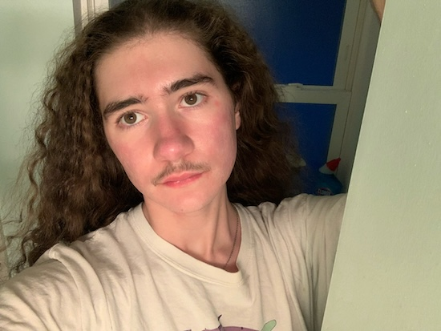
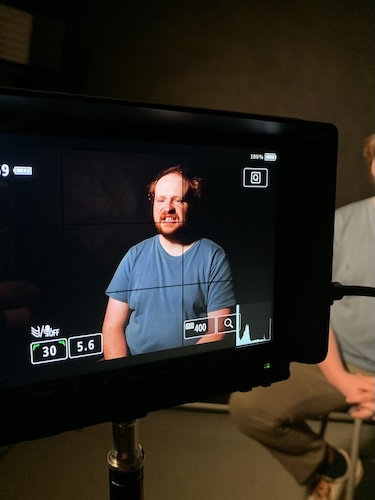
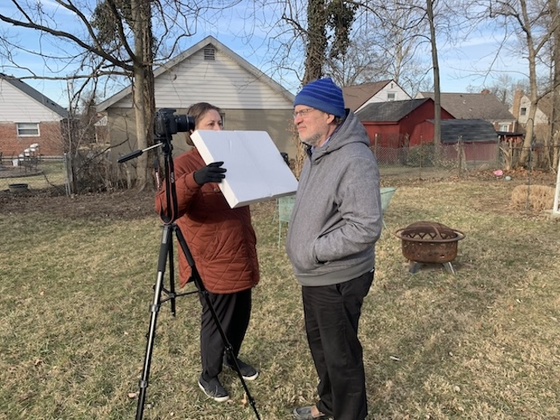

Welcome!
My name is Junius "Junie" Wissman. I am a 25 year old from Cincinnati, OH, interested in film, music, and writing.
This is a website all about me and the various artistic endeavors and projects I have worked on/created. It might be slightly sparse in the variety of content I have on here, but I hope to add more and more as this year goes on.
I am currently attending UC Blue Ash for Applied Media Communications and previously attended Bowling Green State University for film production.

These are some images from projects I've been working on this year both inside and outside of class.

